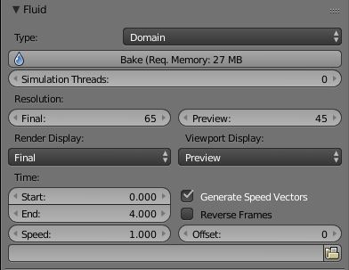

烘焙¶

选定流体域的流体模拟选项。
烘焙按钮¶
执行真实的流体模拟。Blender将继续正常工作，但会出现在信息编辑器的头部一个进度条，靠近渲染下拉（render pulldown）。按Esc或旁边的状态栏的"X"将中止模拟。完成后2个.bobj.gz文件 （一个用于最终质量，一个用于预览质量），加上一个.bvel.gz文件 （用于最终质量）将在每一帧的选择的输出目录内生成。
Bake Directory¶
用来储存烘焙表面网格的文件目录和前缀。
这与动画输出设置类似，只有选择文件时有点特殊：当你选择任何先前生成的表面网格（如test1_fluidsurface_final_0132.bobj.gz ），前缀将自动设置（ test1_在这个例子中）。通过这种方式，模拟使用不同的设置多次进行，并允许不同组的表面的数据之间的快速变化。
注意事项¶
- 唯一的域（全局域domain）
- 由于存在场景之间的连接和跨越的可能性，整个blend-file中只存在一个流体域（全局域domain）。
- 选择烘焙域
- 当一个流体域被烘焙后，他的改变将映射到流体网格上。如要重新选择域，可以让您在进行了更改之后重新烘焙，只要选择任意帧并按住RMB选取流体网格即可。然后，你可以再次点击按钮烘焙（bake）来重新计算该流体域内的流体流动。
- 烘焙总是开始于帧＃1
- 流体仿真无视在动画面板1中的开始设置，它总是会从第1帧烘焙。如果你想模拟在第1帧之后开始，则必须控制您的流体域中的流体对象直到你的期望帧开始模拟之前都处于非活动状态。
- 烘焙总是在动画面板中设置的结束帧结束。
- 如果你的帧速率是每秒25帧，而结束时间为4.0秒时，那么你应该（如果你的起始时间为0）设置你的动画帧结束为4.0 × 25 = 100。
- 释放以前的已应用烘焙方案
- 删除“烘焙”目录下的内容是一个破坏性的实现方式。要小心，如果超过一个以上的模拟使用相同的烘焙目录（确保它们使用不同的文件名，否则他们会互相覆盖的）！
- 烘焙重用
- 手动输入(或搜索)以前保存(已烘焙)的计算目录和文件名，可将流体流动和网格形变切换为使用之前的烘焙。这样，可以简单地通过在该文本框指定流体烘焙，实现重复使用。
- 烘焙过程处理时间
烘焙需要大量的计算能力（因此消耗时间）。根据场景的不同，可能最好是整夜进行烘焙过程。
如果网格具有调整器，渲染设置可用于将网格导出到流体求解器内。根据设置的不同，计算时间和内存使用可能会成倍增加。例如，当使用具有细分曲面的动网格描述一个障碍时，可通过关闭，或降低细分级别以减少模拟时间。当安装/建立（setup/rig）正确时，你总是可以通过增加设置来产生更逼真的模拟结果。